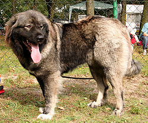

კავკასიური ნაგაზი
წარმოშობის ქვეყანა კავკასია საქართველოს დროშა საქართველო საბჭოთა კავშირის დროშა სსრკ თვისებები წონა 45-100 კგ სიმაღლე 67-75სმ სიცოცხლის ხანგრძლივობა 11 წელი კლასიფიკაცია და სტანდარტები ძაღლი (Canis lupus familiaris) კავკასიური ნაგაზი — ძაღლის ერთ-ერთი უძველესი ჯიში. უცხოურ წყაროებში წარმოშობის ადგილად კავკასია[1] ან საბჭოთა კავშირია მიჩნეული,[2] ქართული წყაროები კი მის წარმოშობას უშუალოდ საქართველოს უკავშირებენ. მისი წარმოშობის მრავალი ვერსია არსებობს; ერთ-ერთის თანახმად, იგი წარმოშობილია ტიბეტური მასტიფისგან, რომელიც კავკასიის ტერიტორიაზე მეომრებმა და ვაჭრებმა 2 ათასი წლის წინ შემოიყვანეს. სხვა ვერსიით, ის დამოუკიდებელი ჯიშია, რომელიც უძველესმა ქართველურმა ტომებმა ხალხური სელექცის გზით გამოიყვანეს. ჯიში პირველად გერმანელმა ზოოლოგმა მიულერმა, XIX საუკუნის დასაწყისში, საქართველოს მთიანეთში აღწერა. სულხან-საბა ორბელიანის განმარტებით, ნაგაზი არის განსაკუთრებით დიდი, „გვარიანი“ და გულადი ძაღლი. 1990 წელს ეს ჯიში რუსმა კინოლოგებმა მსოფლიო კინოლოგიურ საზოგადოებებში წარადგინეს „კავკაზსკაია ოვჩარკა“-ს (კავკასიური ნაგაზის) სახელით და ოფიციალურად დარეგისტრირდა საერთაშორისო კინოლოგიურ ფედერაციაში (FCI) დამტკიცებული სტანდარტით.[3]
დიდი ზომისა და ძლიერი აგებულების მქონე ძაღლია. თავი დიდი და განიერი აქვს, ყურები ჩამოყრილი, კისერი მოკლე და კარგად დაკუნთული, ზურგი განიერი და სწორი, წელი მოკლე, განიერი და ძლიერი. გავა ოვალური ფორმისაა, კუდი მაღლაა დასმული, ძირს ჩამოშვებულ მდგომარეობაში სწვდება სახტომ სახსარს. ხვადის სიმაღლე მინდაოში 72–75 სმ-ია (არანაკლებ 68 სმ-ისა), ხოლო ძუსი — 66–69 სმ (არანაკლებ 64 სმ-ისა). ფორმატის ინდექსი — 104–108. კავკასიური ნაგაზისათვის დამახასიათებელია სქელი და ელასტიკური კანი, ბეწვი სხეულზე მჭიდროდაა გადაკრული, უხეში, სწორი და კარგად განვითარებული, შედარებით ღია ფერის თივთიკით. ბეწვის სიგრძის მიხედვით ჯიშს ყოფენ ორ ტიპად: გრძელბეწვიან და მოკლებეწვიან ნაგაზებად. სტანდარტით დაშვებულია ნებისმიერი კომბინაციის ბეწვის შეფერილობა.[3]
აღსანიშნავია, რომ ჯიშის დღეისათვის მომქმედი სტანდარტი შედგენილია ქართული ტიპის მონაცემებზე დაყრდნობით და ამას აღიარებენ რუსი კინოლოგებიც, რომლებიც აღნიშნავენ, რომ კავკასიური ნაგაზის საუკეთესო პოპულაცია გავრცელებულია საქართველოში. ჩვენში განასხვავებენ ამ ძაღლის გერგეთულ, გარბენულ, სტეფანწმინდურ და ახალციხურ ტიპებს (ხევი). ყოფილი საბჭოთა კავშირის რესპუბლიკების გარდა ჯიში შეყვანილია გერმანიაში, პოლონეთში, უნგრეთში, ჩეხეთსა და სლოვაკეთში. 1992 წელს თერჯოლის რაიონის სოფ. სიქთარვაში წმიდა გიორგის მონასტრის ძმობის მიერ დაფუძნდა კავკასიური ნაგაზის ძაღლსაშენი „ტაბაკინი“, რომლის მიზანია ქართული პოპულაციის ნაგაზის სელექცია და პოპულარიზაცია.[3]
